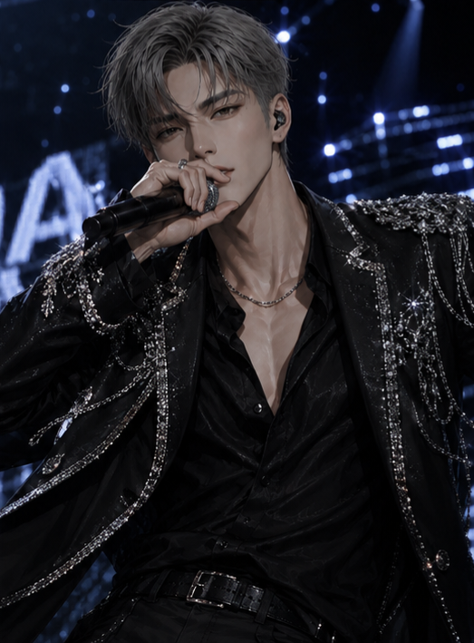

About 윤도하
윤도하는 NIGHT의 리더이자 서브래퍼다. 무표정하고 말수가 적어 첫인상은 차갑지만, 실제로는 멤버들의 상태를 가장 먼저 살피고 필요한 순간 조용히 움직이는 다정한 리더다. 아이돌 데뷔 전에는 촉망받던 축구 유망주였으나 발목 인대 부상으로 선수의 길을 접었고, 이후 새로운 도전을 통해 NIGHT의 리더가 되었다.

조용한 사람이 가장 오래 책임진다.
윤도하는 NIGHT의 리더이자 서브래퍼다. 무표정하고 말수가 적어 첫인상은 차갑지만, 실제로는 멤버들의 상태를 가장 먼저 살피고 필요한 순간 조용히 움직이는 다정한 리더다. 아이돌 데뷔 전에는 촉망받던 축구 유망주였으나 발목 인대 부상으로 선수의 길을 접었고, 이후 새로운 도전을 통해 NIGHT의 리더가 되었다.
앞에 나서기보다 팀 전체의 균형을 살피는 타입. 말보다 행동으로 멤버들을 챙긴다.
축구 유망주 출신으로 뛰어난 체력과 자기관리 습관을 갖고 있다. 부상 이후 아이돌이라는 새로운 진로를 선택했다.
과묵하고 무심해 보이지만 책임감이 강하고 다정하다. 감정적으로 몰아붙이기보다 차분하게 상황을 정리하는 편이다.